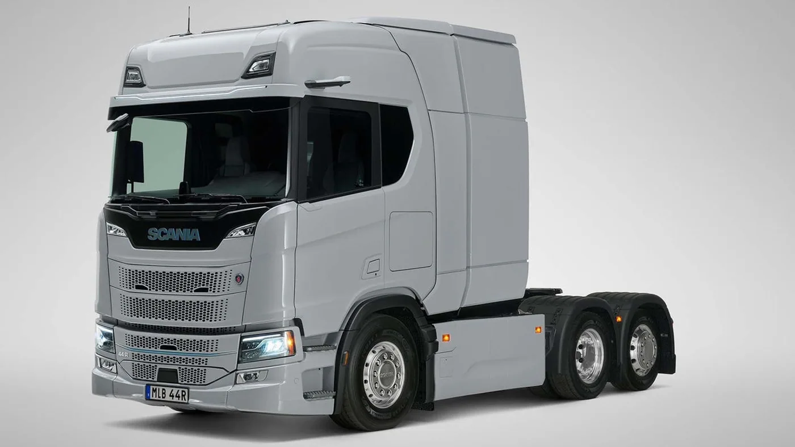

Scania anunció el 14 de septiembre de 2026 una solución eléctrica de larga distancia con autonomía de hasta 720 kilómetros, según configuración y condiciones de operación. La propuesta incorpora baterías detrás de la cabina, además de las instaladas en otras zonas del vehículo, y contempla carga MCS.
En la disposición estándar descrita, dos paquetes MP20 posteriores suman 356 kWh de capacidad instalada. La marca vincula la solución con configuraciones seleccionadas 6x2*4 y con su frente IVD para combinaciones europeas. La capacidad adicional no debe confundirse con la energía total utilizable del camión.
Esta novedad es distinta de los cambios de cabina de Scania Dynamic ya publicados. El comunicado no confirma comercialización argentina ni garantiza el alcance máximo para cualquier ruta o carga.
Un cambio de ubicación también cambia las preguntas
Análisis de Zabala Repuestos. Al evaluar un vehículo, interesa conocer cómo se distribuyen sus equipos y qué espacio requiere la configuración completa. Una nueva disposición puede abrir posibilidades, pero debe revisarse junto al conjunto que la flota pretende utilizar, no como una modificación aislada.
Para una consulta técnica conviene compartir las características del equipo remolcado y de los lugares de trabajo. La propuesta debería explicar qué combinación fue considerada y qué documentación la respalda. Esa claridad evita dar por hecho que una compatibilidad anunciada en otro mercado se mantiene en cualquier aplicación.
Autonomía máxima y planificación diaria
La cifra de alcance permite iniciar una conversación, pero no completa el plan de servicio. La empresa necesita describir sus jornadas y reconocer variaciones habituales. Un recorrido que parece simple en un mapa puede incluir esperas, desvíos y cambios de programación.
Una evaluación debería mostrar qué condiciones se utilizaron y qué margen se conserva cuando el día cambia. Conviene pedir escenarios comprensibles en lugar de una única respuesta afirmativa. Saber dónde están los límites ayuda a decidir qué servicios conviene estudiar primero.

La recarga tiene que encajar en la operación
El nombre de un sistema de carga no describe por sí solo una parada. La flota necesita conocer instalaciones, accesos, horarios y responsabilidades. Una propuesta útil conecta esos elementos con los movimientos del vehículo y con el tiempo disponible en cada punto.
También importa la respuesta ante una instalación no disponible. Debe existir un canal para recibir la información y reorganizar el servicio. La contingencia pertenece a la planificación del transporte y no debería quedar como una duda para resolver durante el primer viaje.
Qué medir durante una prueba
Antes de comenzar, puede acordarse un registro de recorridos completados, detenciones y cambios respecto del plan. Las observaciones del conductor deberían acompañar los datos de operación. Así será posible reconocer tanto resultados como necesidades de adaptación.
Es útil separar incidentes de naturaleza diferente. Una demora de recepción y una dificultad técnica pueden interrumpir el mismo viaje, pero requieren respuestas distintas. Conservar esa distinción permite que la revisión posterior llegue al responsable adecuado.
El taller forma parte del proyecto
La preparación de atención debe corresponder al vehículo exacto y a sus procedimientos oficiales. Para sistemas de alta tensión, la formación y las responsabilidades no pueden darse por supuestas. El operador necesita saber qué actividades quedan dentro de su alcance y cuáles requieren asistencia especializada.
La identificación de componentes también merece orden desde el inicio. Chasis, configuración e historial permiten que una consulta se apoye en datos concretos. Cuanto más especializada sea la unidad, más importante será conservar esa documentación junto con los registros de uso.
Cómo seguir la novedad desde Argentina
El anuncio amplía las posibilidades que se estudian para el transporte eléctrico, pero no sustituye una propuesta local. Antes de considerar una incorporación, corresponde confirmar oferta, condiciones de utilización y respaldo con los proveedores responsables.
La pregunta de fondo sigue siendo práctica: qué tarea puede realizar la combinación de vehículo, energía y servicio de manera repetible. La autonomía publicada ayuda a formular esa pregunta; la evaluación de una operación concreta será la que permita responderla.